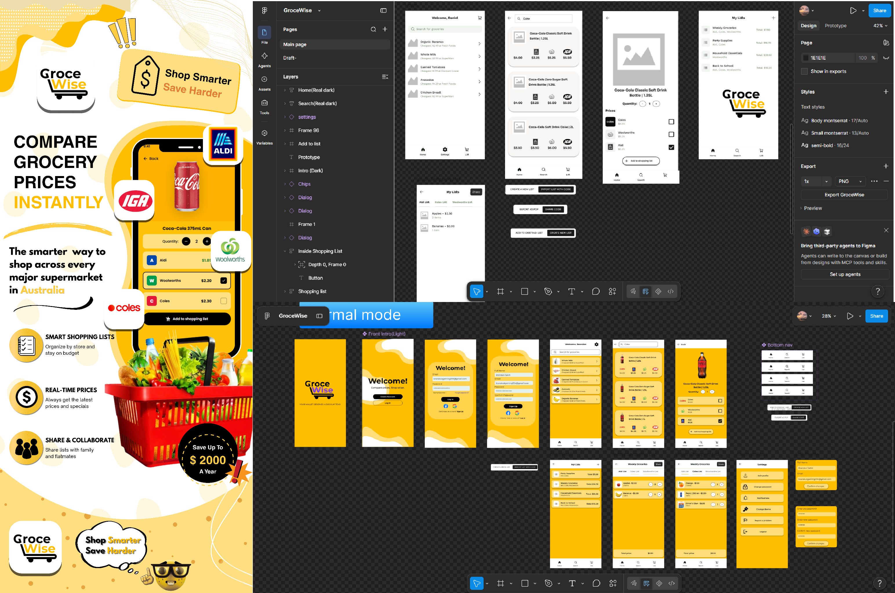
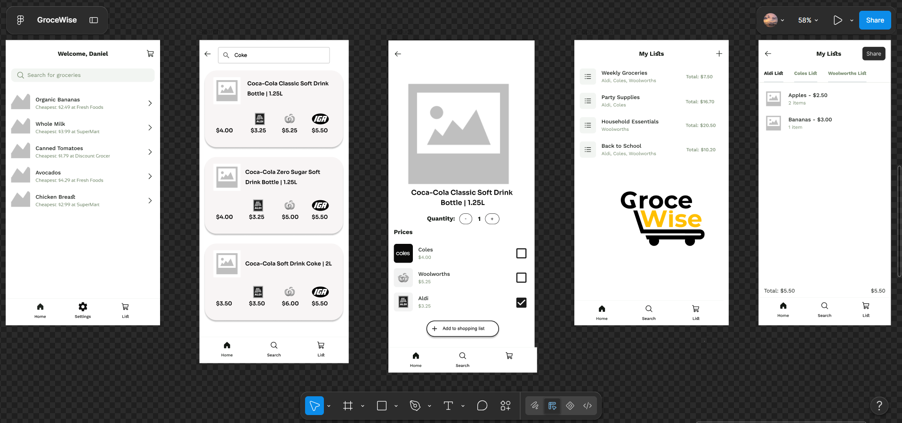
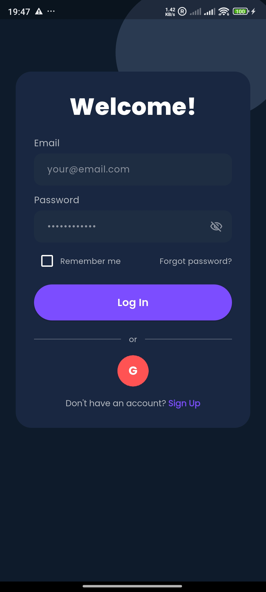
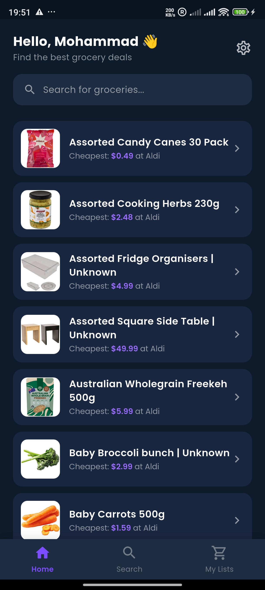
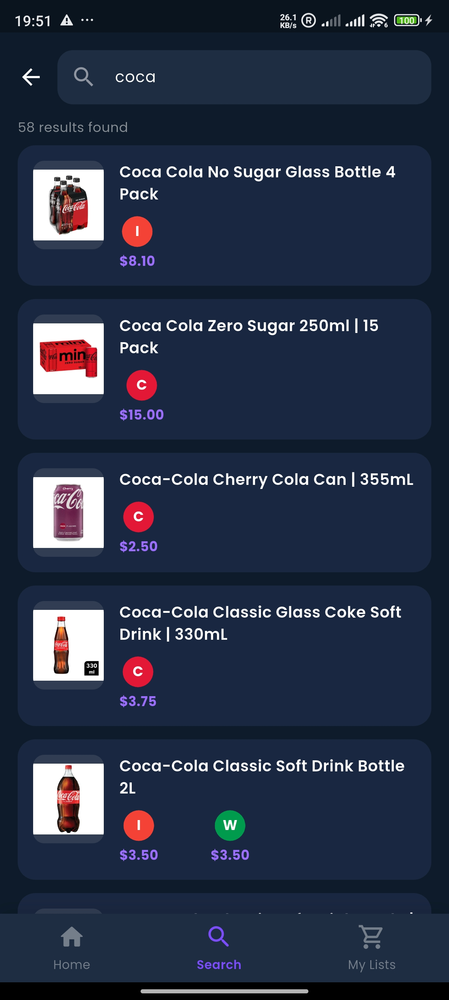
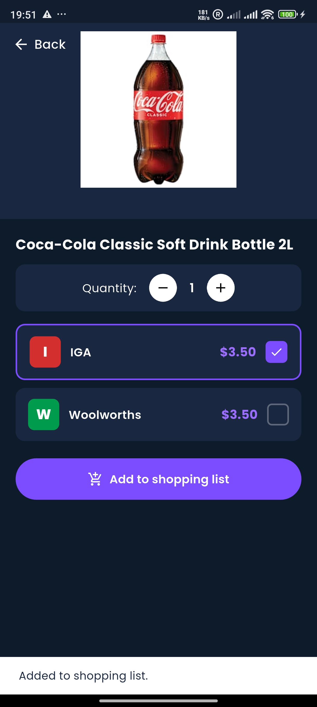
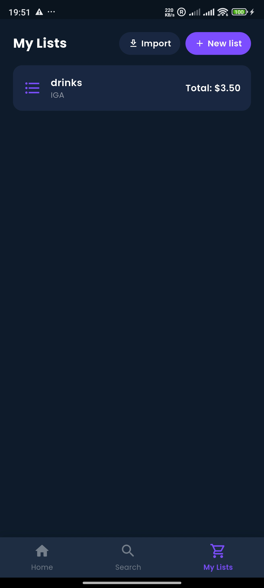
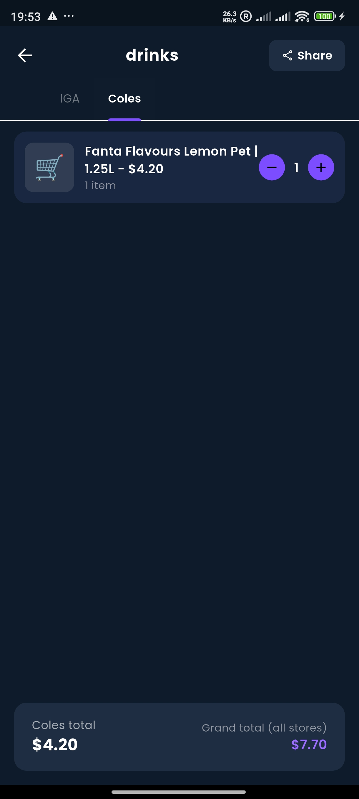
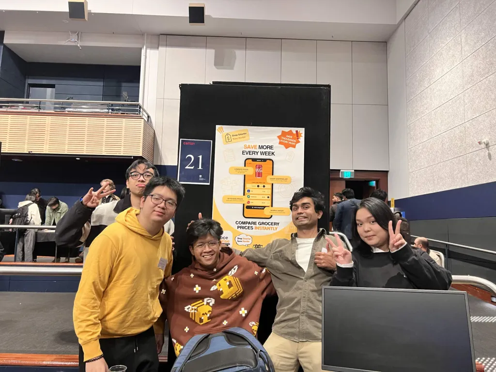

UX/UI · Mobile Application
GroceWise
A grocery price comparison application designed to help users compare supermarket prices and create smarter shopping lists.

01 · Overview
Making grocery shopping easier
GroceWise was a university project focused on creating a mobile application that helps users compare grocery prices across major supermarkets.
The concept was designed around a common shopping problem: users often need to check multiple supermarkets to find better prices, while also keeping track of everything they need to buy.
Project Details
02 · The Problem
Grocery prices can be difficult to compare
Grocery shopping involves comparing prices, remembering items and deciding where to shop. When prices differ between supermarkets, finding the most cost-effective option can become time-consuming.
We wanted to explore how a mobile application could bring this information together and make the shopping process more convenient.
User Needs
Compare prices
Users can compare grocery prices across different supermarkets.
Build shopping lists
Users can organise the products they need before going shopping.
Find better options
The concept helps users identify where different products may be cheaper.
Simplify planning
The application brings comparison and shopping-list planning into one experience.
03 · My Role
GroceWise was developed as a group project. My main contributions focused on design, marketing and team collaboration.
I contributed to discussions around the product concept and user experience, worked on interface design, and participated in team meetings and project planning.
While other team members focused more heavily on backend development and technical implementation, my role was primarily centred around the product's visual experience, communication and coordination.

04 · UX/UI Process
From idea to interface
Understand
Identify the grocery shopping problems the application should address.
Plan
Define the key features and structure of the application.
Design
Create interfaces and user flows around the core shopping tasks.
Refine
Review the design and improve the experience based on project feedback.
05 · Design Decisions
Keeping the experience simple
The interface was designed around the idea that users should be able to understand product information quickly while shopping.
The main experience focused on making product comparison, shopping lists and supermarket information easy to navigate.

06 · Development
Bringing the concept to life
The project was developed as an Android mobile application using Flutter and Dart.
Firebase was also considered as part of the application's backend and authentication architecture.
GroceWise in action
From discovering grocery deals to comparing prices and sharing shopping lists, GroceWise makes everyday grocery planning simpler.

Simple Login
Secure account access for personalised shopping.

Discover Deals
Browse grocery products and quickly find cheaper options.

Product Search
Search products across multiple Australian retailers.

Compare Prices
Compare the same product across different stores.

Smart Shopping Lists
Organise products by store and keep track of total cost.

Share Lists
Generate a share code so others can import a shopping list.
07 · Challenges
Working within a team project
One of the main challenges was coordinating different areas of the project while keeping the product direction consistent.
Working as part of a team also required communicating ideas clearly, dividing responsibilities and adapting to technical limitations during development.
Outcome
GroceWise resulted in a mobile application concept that combines grocery price comparison with shopping-list planning.
The project gave me practical experience working across design, collaboration, product thinking and application development.
08 · What I Learned
What I would take into future projects
This project helped me understand how important it is to connect user needs, product requirements and technical constraints throughout the development process.
It also strengthened my interest in the space between users, design and technology, which is an area I would like to continue developing professionally.
